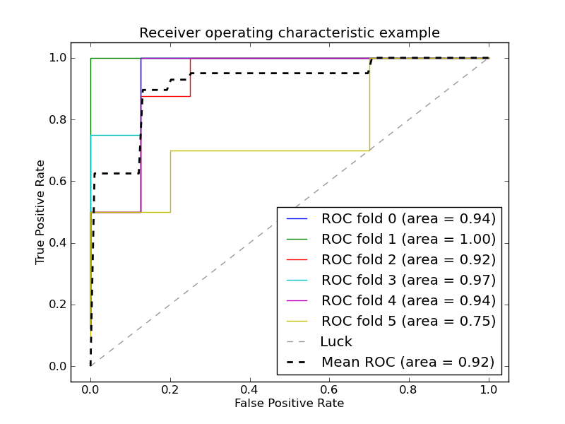

Receiver operating characteristic (ROC) with cross validation¶
Example of Receiver operating characteristic (ROC) metric to evaluate the quality of the output of a classifier using cross-validation.

Python source code: plot_roc_crossval.py
print __doc__
import numpy as np
from scipy import interp
import pylab as pl
from scikits.learn import svm, datasets
from scikits.learn.metrics import roc_curve, auc
from scikits.learn.cross_val import StratifiedKFold
################################################################################
# Data IO and generation
# import some data to play with
iris = datasets.load_iris()
X = iris.data
y = iris.target
X, y = X[y!=2], y[y!=2]
n_samples, n_features = X.shape
# Add noisy features
X = np.c_[X,np.random.randn(n_samples, 200*n_features)]
################################################################################
# Classification and ROC analysis
# Run classifier with crossvalidation and plot ROC curves
cv = StratifiedKFold(y, k=6)
classifier = svm.SVC(kernel='linear', probability=True)
mean_tpr = 0.0
mean_fpr = np.linspace(0, 1, 100)
all_tpr = []
for i, (train, test) in enumerate(cv):
probas_ = classifier.fit(X[train], y[train]).predict_proba(X[test])
# Compute ROC curve and area the curve
fpr, tpr, thresholds = roc_curve(y[test], probas_[:,1])
mean_tpr += interp(mean_fpr, fpr, tpr)
mean_tpr[0] = 0.0
roc_auc = auc(fpr, tpr)
pl.plot(fpr, tpr, lw=1, label='ROC fold %d (area = %0.2f)' % (i, roc_auc))
pl.plot([0, 1], [0, 1], '--', color=(0.6,0.6,0.6), label='Luck')
mean_tpr /= len(cv)
mean_tpr[-1] = 1.0
mean_auc = auc(mean_fpr, mean_tpr)
pl.plot(mean_fpr, mean_tpr, 'k--',
label='Mean ROC (area = %0.2f)' % mean_auc, lw=2)
pl.xlim([-0.05,1.05])
pl.ylim([-0.05,1.05])
pl.xlabel('False Positive Rate')
pl.ylabel('True Positive Rate')
pl.title('Receiver operating characteristic example')
pl.legend(loc="lower right")
pl.show()